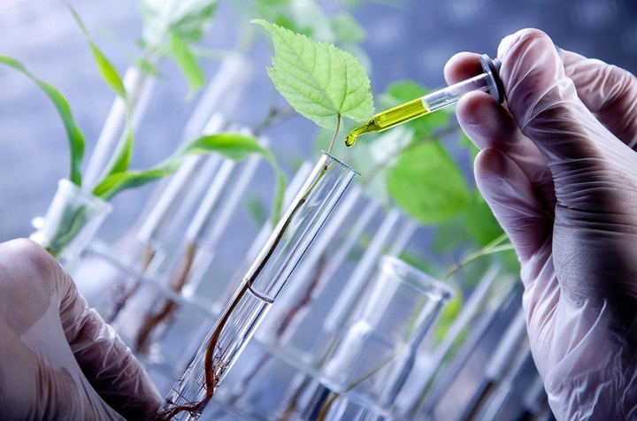
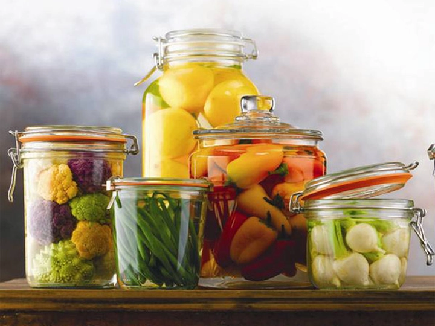
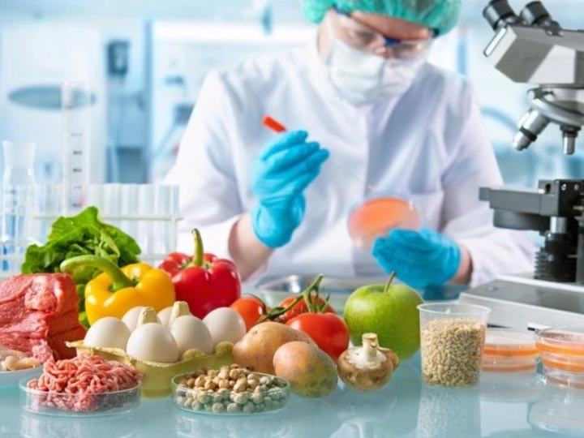
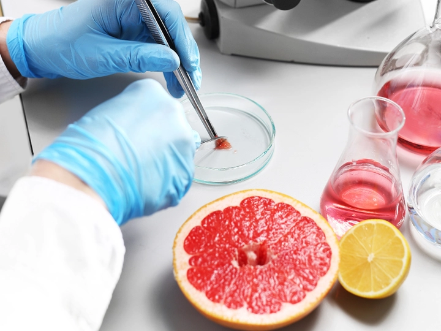

Công nghệ sinh học thực phẩm: Ứng dụng và xu hướng phát triển
Ngày nay, khi cuộc sống hiện đại thúc đẩy nhu cầu về thực phẩm an toàn, tiện lợi và giàu dinh dưỡng, người tiêu dùng không chỉ quan tâm đến hương vị mà còn chú trọng đến giá trị dinh dưỡng, lợi ích sức khỏe và thời gian bảo quản. Sự phát triển nhanh chóng của các siêu thị, thực phẩm chế biến sẵn, đồ uống dinh dưỡng hay thực phẩm chức năng đặt ra thách thức lớn cho ngành thực phẩm: làm thế nào để vừa đáp ứng nhu cầu đa dạng, vừa bảo đảm an toàn và chất lượng?
Trong bối cảnh đó, các phương pháp truyền thống như lên men hay bảo quản thủ công không còn đủ sức đáp ứng. Đây chính là lúc công nghệ sinh học thực phẩm trở thành giải pháp hiện đại, ứng dụng khoa học sinh học, enzym và vi sinh vật để cải thiện chất lượng, tăng giá trị dinh dưỡng và kéo dài thời gian bảo quản. Nhờ những tiến bộ này, chúng ta không chỉ có sữa chua, pho mát hay rượu vang thơm ngon, mà còn có các sản phẩm thực phẩm chức năng, probiotic, vitamin bổ sung và nhiều loại thực phẩm thông minh khác, phục vụ nhu cầu ngày càng cao của người tiêu dùng hiện đại.
Hôm nay hãy cùng TrithucWorld tìm hiểu về công nghệ sinh học thông qua bài phân tích sau.
1. Giới thiệu về công nghệ sinh học thực phẩm
Công nghệ sinh học thực phẩm là một lĩnh vực liên ngành, kết hợp giữa sinh học, hóa học và kỹ thuật thực phẩm, nhằm tạo ra những sản phẩm không chỉ an toàn và bổ dưỡng, mà còn đáp ứng các yêu cầu về hương vị, kết cấu và thẩm mỹ. Không chỉ dừng lại ở việc chế biến thực phẩm truyền thống, công nghệ sinh học còn khai thác tiềm năng của vi sinh vật, enzyme, tế bào và công nghệ di truyền để cải tiến chất lượng, nâng cao giá trị dinh dưỡng và tối ưu hóa quy trình sản xuất.
Ngành này đóng vai trò quan trọng trong việc giải quyết các thách thức toàn cầu liên quan đến lương thực, dinh dưỡng và an toàn thực phẩm. Trong bối cảnh dân số ngày càng tăng và nhu cầu về thực phẩm lành mạnh, bền vững cũng tăng theo, công nghệ sinh học thực phẩm trở thành công cụ then chốt để đáp ứng nhu cầu đó, giúp sản xuất thực phẩm số lượng lớn nhưng vẫn đảm bảo chất lượng cao.

Ngoài ra, công nghệ sinh học còn góp phần giảm thiểu lãng phí thực phẩm và tác động môi trường. Bằng việc sử dụng vi sinh vật và enzyme trong lên men, xử lý thực phẩm hay bảo quản, ngành này không chỉ tạo ra sản phẩm lâu hỏng hơn mà còn giảm nhu cầu sử dụng chất bảo quản hóa học, hướng tới thực phẩm an toàn và thân thiện với môi trường.
Một khía cạnh quan trọng khác là khả năng tạo ra các sản phẩm thực phẩm chức năng, giàu vitamin, khoáng chất, probiotic hoặc prebiotic, góp phần nâng cao sức khỏe người tiêu dùng. Nhờ đó, công nghệ sinh học thực phẩm không chỉ đáp ứng nhu cầu cơ bản về dinh dưỡng mà còn hỗ trợ phòng ngừa bệnh tật, cải thiện hệ tiêu hóa và tăng cường miễn dịch.
Nhìn chung, công nghệ sinh học thực phẩm là cầu nối giữa khoa học tiên tiến và nhu cầu đời sống, mở ra cơ hội phát triển các sản phẩm an toàn, bổ dưỡng, sáng tạo và bền vững, đồng thời đóng vai trò then chốt trong việc xây dựng hệ thống thực phẩm hiện đại, thông minh và thân thiện với môi trường.
2. Lịch sử phát triển công nghệ sinh học thực phẩm
Lịch sử công nghệ sinh học thực phẩm gắn liền với nhu cầu bảo quản và cải thiện thực phẩm của con người từ hàng nghìn năm trước. Từ thời cổ đại, con người đã sử dụng lên men tự nhiên để tạo ra các sản phẩm như rượu, sữa chua, pho mát, bánh mì và kim chi, vừa giúp kéo dài thời gian bảo quản, vừa cải thiện hương vị và kết cấu thực phẩm. Các phương pháp này mặc dù đơn giản nhưng đã đặt nền móng cho sự phát triển của công nghệ sinh học trong thực phẩm.
Đến thế kỷ 19 và 20, khi ngành vi sinh vật học và enzyme học phát triển mạnh mẽ, các nhà khoa học bắt đầu nhận diện vi sinh vật chịu trách nhiệm cho quá trình lên men, từ đó kiểm soát được chất lượng và năng suất sản phẩm. Đây là bước ngoặt quan trọng, mở ra kỷ nguyên sản xuất thực phẩm theo quy mô công nghiệp. Ví dụ, việc xác định chính xác vi khuẩn lactic giúp sản xuất sữa chua đồng đều, an toàn và giàu probiotic.
Ngày nay, công nghệ sinh học thực phẩm hiện đại còn kết hợp công nghệ gen, tế bào và vi sinh vật biến đổi, tạo ra các sản phẩm mới, có giá trị dinh dưỡng cao, hương vị đa dạng và thời gian bảo quản lâu hơn. Nhờ những tiến bộ này, ngành thực phẩm không chỉ đáp ứng nhu cầu cơ bản về ăn uống mà còn tạo ra các sản phẩm chức năng, hỗ trợ sức khỏe, giảm nguy cơ bệnh tật và phục vụ nhu cầu tiêu dùng ngày càng cao.
3. Các nguyên liệu và vi sinh vật chủ yếu
Trong công nghệ sinh học thực phẩm, vi sinh vật đóng vai trò trung tâm, đóng góp vào việc lên men, cải thiện hương vị, kết cấu và giá trị dinh dưỡng của sản phẩm. Các loại vi khuẩn lactic (Lactobacillus, Streptococcus), nấm men như Saccharomyces cerevisiae và các vi sinh vật lên men khác được sử dụng rộng rãi trong sản xuất sữa chua, pho mát, rượu, bia và các thực phẩm lên men truyền thống. Chúng không chỉ giúp chuyển hóa đường thành acid, rượu hoặc khí mà còn tạo ra các hợp chất có lợi cho sức khỏe, như probiotic giúp cân bằng hệ vi sinh đường ruột.

Bên cạnh vi sinh vật, enzym cũng là nguyên liệu sinh học quan trọng. Enzym protease phân giải protein, giúp làm mềm thịt hoặc cải thiện kết cấu pho mát; amylase phân giải tinh bột, hỗ trợ làm bánh mì và đồ uống có chứa tinh bột; lipase xử lý chất béo, tạo hương vị đặc trưng cho pho mát và sữa. Nguyên liệu sinh học này phải được chọn lọc và kiểm định nghiêm ngặt, đảm bảo hiệu quả cao và an toàn cho người tiêu dùng.
Ngoài ra, công nghệ sinh học thực phẩm còn khai thác nguyên liệu thực vật và vi sinh vật biến đổi gen để tạo ra các sản phẩm chức năng, giàu vitamin, khoáng chất hoặc probiotic đặc hiệu. Điều này giúp ngành thực phẩm đa dạng hóa sản phẩm, phục vụ nhu cầu dinh dưỡng, sức khỏe và thẩm mỹ ngày càng cao của người tiêu dùng hiện đại.
4. Ứng dụng trong lên men thực phẩm
Lên men là quy trình cốt lõi trong công nghệ sinh học thực phẩm, được sử dụng từ thời cổ đại đến nay. Quá trình này dựa trên khả năng của vi khuẩn và nấm men chuyển hóa đường thành acid, rượu hoặc khí, từ đó tạo ra các sản phẩm như sữa chua, pho mát, rượu vang, bia, kim chi, dưa muối và các loại thực phẩm lên men truyền thống khác.
Lên men không chỉ cải thiện hương vị, kết cấu và mùi thơm, mà còn tăng giá trị dinh dưỡng bằng cách sinh ra các vitamin, acid amin thiết yếu và vi sinh vật có lợi cho đường ruột. Ví dụ, sữa chua lên men chứa Lactobacillus bulgaricus và Streptococcus thermophilus, giúp hỗ trợ tiêu hóa, cân bằng hệ vi sinh và tăng cường miễn dịch.

Ứng dụng lên men còn giúp kéo dài thời gian bảo quản tự nhiên, giảm sự phát triển của vi khuẩn gây hư hỏng, đồng thời tạo ra các sản phẩm thực phẩm chức năng. Trong sản xuất công nghiệp, việc kiểm soát vi sinh vật và điều kiện lên men còn giúp đảm bảo chất lượng đồng đều, từ màu sắc, mùi vị đến độ sánh và độ tươi ngon.
Ngoài các sản phẩm truyền thống, lên men hiện đại còn được ứng dụng trong sản xuất đồ uống dinh dưỡng, probiotic, thực phẩm thay thế thịt và các sản phẩm thực phẩm “sạch”, đáp ứng nhu cầu ngày càng cao của người tiêu dùng về sức khỏe, an toàn và tiện lợi.
5. Ứng dụng công nghệ enzyme trong thực phẩm
Enzym là các chất xúc tác sinh học có khả năng tăng tốc các phản ứng hóa học trong thực phẩm mà không làm thay đổi bản chất sản phẩm. Trong ngành công nghệ sinh học thực phẩm, enzym được ứng dụng rộng rãi để cải thiện chất lượng, hương vị, kết cấu và độ bền của sản phẩm. Ví dụ, enzym protease được sử dụng để làm mềm thịt, giúp thịt dễ chế biến và hấp thu dinh dưỡng hơn; lipase phân giải chất béo, tạo hương vị đặc trưng cho pho mát và các sản phẩm sữa; còn amylase phân giải tinh bột trong bánh mì và đồ uống có chứa tinh bột, giúp sản phẩm mềm, xốp và dễ tiêu hóa.
Việc sử dụng enzym còn mang lại lợi ích kinh tế và môi trường. Nó giúp rút ngắn thời gian chế biến, giảm lượng chất thải, tối ưu hóa nguyên liệu và nâng cao hiệu quả sản xuất. Đồng thời, enzym còn giảm nhu cầu sử dụng hóa chất bảo quản, giúp tạo ra các sản phẩm tự nhiên, lành mạnh và an toàn hơn. Trong các nhà máy chế biến thực phẩm hiện đại, các enzym đặc hiệu được thiết kế để hoạt động dưới điều kiện kiểm soát, đảm bảo kết quả đồng nhất và chất lượng cao cho mỗi mẻ sản xuất.
Ứng dụng enzyme không chỉ giới hạn ở thực phẩm truyền thống mà còn mở rộng sang đồ uống dinh dưỡng, thực phẩm chức năng, bánh kẹo, các sản phẩm chế biến từ thịt và thực phẩm thuần chay, giúp đáp ứng nhu cầu đa dạng và ngày càng cao của người tiêu dùng hiện đại.
6. Thực phẩm chức năng và dinh dưỡng bổ sung
Công nghệ sinh học thực phẩm đã mở ra khả năng tạo ra thực phẩm chức năng và sản phẩm bổ sung dinh dưỡng, giúp người tiêu dùng không chỉ đáp ứng nhu cầu năng lượng mà còn hỗ trợ sức khỏe toàn diện. Các sản phẩm này có thể giàu probiotic, prebiotic, vitamin, khoáng chất, protein hoặc chất chống oxy hóa, mang lại lợi ích như tăng cường hệ miễn dịch, cải thiện tiêu hóa, giảm nguy cơ mắc các bệnh mãn tính như tim mạch hay tiểu đường.
Một ưu điểm nổi bật của công nghệ sinh học là khả năng tùy chỉnh sản phẩm theo nhu cầu của từng nhóm đối tượng. Ví dụ, trẻ em có thể sử dụng sữa chua giàu probiotic giúp tăng cường miễn dịch; người cao tuổi có thể tiêu thụ thực phẩm giàu canxi, vitamin D và enzyme hỗ trợ tiêu hóa; người bệnh tiểu đường có thể dùng các sản phẩm ít đường, giàu chất xơ và protein, giúp kiểm soát đường huyết.
Nhờ ứng dụng sinh học, ngành thực phẩm không chỉ tạo ra sản phẩm chức năng đơn lẻ mà còn kết hợp nhiều lợi ích trong một sản phẩm, như snack bổ sung probiotic và vitamin, đồ uống giàu khoáng chất và enzym, đáp ứng yêu cầu ngày càng cao về sức khỏe, tiện lợi và an toàn.
7. Công nghệ sinh học trong bảo quản thực phẩm
Một trong những thách thức lớn của ngành thực phẩm là kéo dài thời gian bảo quản mà vẫn đảm bảo an toàn và chất lượng. Công nghệ sinh học thực phẩm cung cấp các giải pháp tự nhiên, hiệu quả và thân thiện môi trường để đạt được mục tiêu này. Ví dụ, men lactic trong các sản phẩm lên men như sữa chua, dưa muối, kim chi có khả năng ức chế sự phát triển của vi khuẩn gây hỏng, đồng thời tạo môi trường acid giúp kéo dài thời gian bảo quản.
Enzym cũng đóng vai trò quan trọng trong việc ngăn chặn quá trình oxy hóa chất béo, phân hủy protein và tinh bột, từ đó giữ được hương vị, màu sắc và giá trị dinh dưỡng của thực phẩm trong thời gian dài. So với phương pháp hóa học truyền thống, sử dụng vi sinh vật và enzym giúp giảm phụ thuộc vào chất bảo quản nhân tạo, đảm bảo sản phẩm an toàn, thân thiện với người tiêu dùng và môi trường.
Ngoài ra, các công nghệ sinh học tiên tiến còn cho phép tích hợp hệ thống kiểm soát vi sinh vật trong dây chuyền sản xuất, giảm nguy cơ nhiễm khuẩn và bảo quản hiệu quả mà không ảnh hưởng đến hương vị và kết cấu sản phẩm. Điều này đặc biệt quan trọng trong sản xuất thực phẩm chế biến sẵn, đồ uống dinh dưỡng, thực phẩm chức năng và sản phẩm đông lạnh, nơi yêu cầu chất lượng ổn định, an toàn và thời gian bảo quản lâu.
8. An toàn thực phẩm và kiểm soát chất lượng
Trong ngành công nghệ sinh học thực phẩm, an toàn luôn được đặt lên hàng đầu. Việc kiểm soát vi sinh vật, độc tố, chất cặn bã, hóa chất và các yếu tố rủi ro sinh học được thực hiện một cách nghiêm ngặt và toàn diện. Bất kỳ sản phẩm nào đến tay người tiêu dùng đều phải trải qua quy trình kiểm nghiệm chặt chẽ, từ nguyên liệu đầu vào đến thành phẩm cuối cùng, nhằm đảm bảo không có vi khuẩn gây hại, nấm mốc hoặc chất độc tích tụ.
Các tiêu chuẩn quốc tế như ISO 22000, HACCP, Codex Alimentarius được áp dụng rộng rãi, giúp doanh nghiệp xây dựng hệ thống quản lý chất lượng toàn diện. Hệ thống này không chỉ kiểm soát các nguy cơ sinh học mà còn theo dõi nguy cơ vật lý và hóa học, đảm bảo thực phẩm đạt tiêu chuẩn vệ sinh, chất lượng đồng đều và an toàn tuyệt đối cho người tiêu dùng.

Bên cạnh đó, công nghệ sinh học còn cung cấp các phương pháp giám sát tiên tiến, như phân tích vi sinh bằng DNA, sử dụng cảm biến sinh học để theo dõi chất lượng trong thời gian thực, hay áp dụng vi sinh vật có lợi trong bảo quản để ức chế các vi sinh vật gây hỏng. Nhờ đó, người tiêu dùng có thể yên tâm sử dụng các sản phẩm hiện đại, từ thực phẩm chế biến sẵn, đồ uống, sữa chua, pho mát, đến thực phẩm chức năng mà vẫn đảm bảo an toàn và dinh dưỡng.
9. Thách thức và rào cản của công nghệ sinh học thực phẩm
Mặc dù công nghệ sinh học thực phẩm phát triển mạnh, ngành này vẫn đối mặt với nhiều thách thức và rào cản. Trước hết, chi phí đầu tư ban đầu và duy trì công nghệ cao rất lớn, bao gồm thiết bị lên men hiện đại, hệ thống kiểm soát vi sinh, và công nghệ enzyme hay gen. Điều này khiến không phải doanh nghiệp nào cũng đủ khả năng ứng dụng rộng rãi các kỹ thuật tiên tiến.
Thứ hai, quy định pháp lý và tiêu chuẩn an toàn ngày càng khắt khe, đặc biệt với các sản phẩm biến đổi gen hoặc thực phẩm chức năng, đòi hỏi doanh nghiệp phải tuân thủ nghiêm ngặt và chứng minh tính an toàn trước khi lưu hành.
Thứ ba, vấn đề đạo đức và nhận thức của người tiêu dùng cũng là một rào cản lớn. Nhiều người còn băn khoăn về việc sử dụng vi sinh vật biến đổi gen, thịt nuôi cấy tế bào hay các thực phẩm nhân tạo. Việc giải thích khoa học, minh bạch thông tin và nâng cao hiểu biết cộng đồng là yếu tố quan trọng để người tiêu dùng tin tưởng và chấp nhận công nghệ mới.
Cuối cùng, việc kiểm soát an toàn sinh học trong quy mô công nghiệp đòi hỏi chuyên môn cao, từ kỹ thuật lên men, sử dụng enzym, kiểm tra vi sinh, đến quản lý chuỗi cung ứng. Nếu không kiểm soát chặt chẽ, rủi ro như nhiễm khuẩn, hỏng sản phẩm hoặc giảm giá trị dinh dưỡng có thể xảy ra, ảnh hưởng trực tiếp đến uy tín và sức khỏe người tiêu dùng.
10. Xu hướng phát triển tương lai
Tương lai của công nghệ sinh học thực phẩm hướng tới sản phẩm sáng tạo, dinh dưỡng cao và bền vững, đáp ứng nhu cầu ngày càng tăng về thực phẩm an toàn, tiện lợi và thân thiện môi trường. Một số xu hướng nổi bật bao gồm:
-
Thịt nuôi cấy từ tế bào: cung cấp protein chất lượng cao mà không cần giết mổ động vật, giảm tác động môi trường và đáp ứng nhu cầu thực phẩm bền vững.
-
Sữa và protein thực vật: phát triển các sản phẩm giàu dinh dưỡng, ít cholesterol, phù hợp với chế độ ăn thuần chay hoặc người dị ứng sữa động vật.
-
Probiotic và thực phẩm chức năng tùy chỉnh: sinh học thực phẩm cho phép tạo ra sản phẩm cá nhân hóa dựa trên nhu cầu sức khỏe, tuổi tác hoặc điều kiện sinh lý.
-
Công nghệ sinh học xanh: áp dụng các quy trình sản xuất tiết kiệm năng lượng, giảm chất thải và hóa chất, hướng tới môi trường bền vững và an toàn cho người tiêu dùng.
Những xu hướng này không chỉ giúp ngành thực phẩm phát triển bền vững, mà còn giải quyết các vấn đề toàn cầu về dinh dưỡng và an toàn thực phẩm. Khi kết hợp với hệ thống kiểm soát chất lượng chặt chẽ, công nghệ sinh học thực phẩm sẽ mở ra kỷ nguyên mới, nơi các sản phẩm không chỉ ngon, bổ mà còn thân thiện với sức khỏe và môi trường, đáp ứng đầy đủ nhu cầu đa dạng của người tiêu dùng hiện đại.